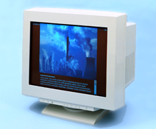

Operating Documentation
Direction 5114043-800, Rev# 9
LightSpeed 3.X Service Methods (Advanced)
Operating Documentation |
This product uses energy efficient (1 Watt deep sleep mode) conventional Cathode Ray Tube (CRT) computer monitors. Both monitors’ CRTs used in this CT scanner are manufactured by the Sony Corporation. Each features a flat faced trinitron tube with a viewable area of 19.8 inches and a dot pitch of 0.24mm. The CRT has a 39% face plate transmission and an AR/AS coating. The monitors support a full set of user definable settings. Color temperature (9300K, 6500K, 5000K) is selectable via a nine language on-screen display (OSD).
Illustration 1: Display Monitors

Horizontal 30-121 kHz
Vertical: 48-160 HZ
Input connector: HD 15 D-Sub
Video: Analog RGB, 0.700Vp-p, positive, 75 OHM
Sync: Separate HD/VD, TTL Polarity Free or External Composite, TTL Polarity Free
100-120/220-240 VAC; 50/60Hz (Auto Sensing)
Meets EPA Energy Star, VESA DPMS & NUTEK 803299
Safety: UL, EN60950 (TUV, GS Mark)
Marking: CE
EMI: FCC Class B, IC B, CISPR22B, VCCI Level II
X-Ray: DHHS, DNHW, PTB
Human factor: MPR2, ZH1/618, ISO 9241-3 & 8, TCO-99
491mm x 498mm x 478mm (HxWxD) - Tilt swivel included
32 kg (70.4 lbs)
The following tables define the video signal timing for the image and operator display video outputs. Both channels are 1280 x 1024 RGB color at 72HZ, 1 Volt peak-to-peak video at 75 ohms.
Table 1: Display Monitor Video Characteristics & Timing
| Display Monitor - Video Characteristics | |
|---|---|
| Parameter | 72 Hz |
| Active Pixel Format | 1280 x 1024 |
| Field/Frame | non-interlaced |
| Refresh Rate | 72.239 Hz |
| Pixel Clock Freq, Period | 129.25 MHz, 7.737 ns |
Table 2: DASM Red/Green/Blue Output Level Specifications
| Video Output | Video Level | Sync Level | Blanking Level |
|---|---|---|---|
| Red | 0.714 Vp-p | none | 0.054 volts |
| Blue | 0.714 Vp-p | none | 0.054 volts |
| Green | 0.714 Vp-p | 0.286 volts | 0.054 volts |
Use only a high quality video signal splitter, in a GE CT approved configuration. See the Installation Manual that came with your system, for further details on the appropriate use of video splitters.
If the display signal is used to drive multiple monitors, only use a commercial, high quality splitter (i.e., Black Box Corp. #RGBSplit-2, or Inline Corp. #IN3012). You should also use high quality (low loss) 75 ohm video cables. Splitters are also available from GEMS (B7530RC).